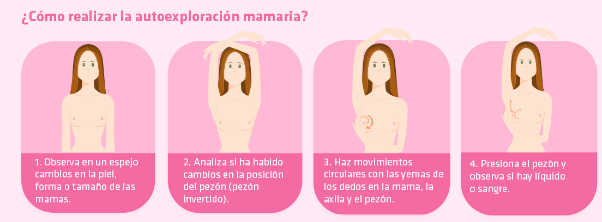

Toda mujer debe realizarse exámenes que ayudan a tener una vida feliz y sana
y asi evitar enfermedades graves
EXAMENES OBLIGATORIOS
1.- Examen de mamas
Este tipo de pruebas son fundamentales para detectar cualquier anomalía que se produzca en los pechos de la mujer.
Existen dos tipos: el examen clínico, que realiza tú médico, y la autoexploración, que se lleva a cabo en casa.
2.- Mamografía
Es la prueba más eficaz para diagnosticar precozmente el cáncer de mama, ya que es capaz de detectar las lesiones
mucho tiempo antes de que puedan ser descubiertas por una misma o por el médico.
La prueba es una radiografía de la mama realizada con un aparato especial de rayos X que se ajusta al tamaño de esta.
3.- Papanicolau (PAP)
Detecta lesiones precancerosas en el cuello del útero. Este tipo de cáncer es muy frecuente en Chile y es causado por el Virus Papiloma Humano.
La recomendación es que todas las mujeres entre 24 y 64 años se realicen este examen cada tres años.
La toma de muestra consiste en que el profesional de la salud coloca cuidadosamente un instrumento llamado espéculo
dentro de la vagina para abrirla ligeramente. Esto le permite observar el interior de la vagina y el cuello uterino.
Se raspan células suavemente de la zona del cuello uterino. La muestra se envía a un laboratorio para su análisis.